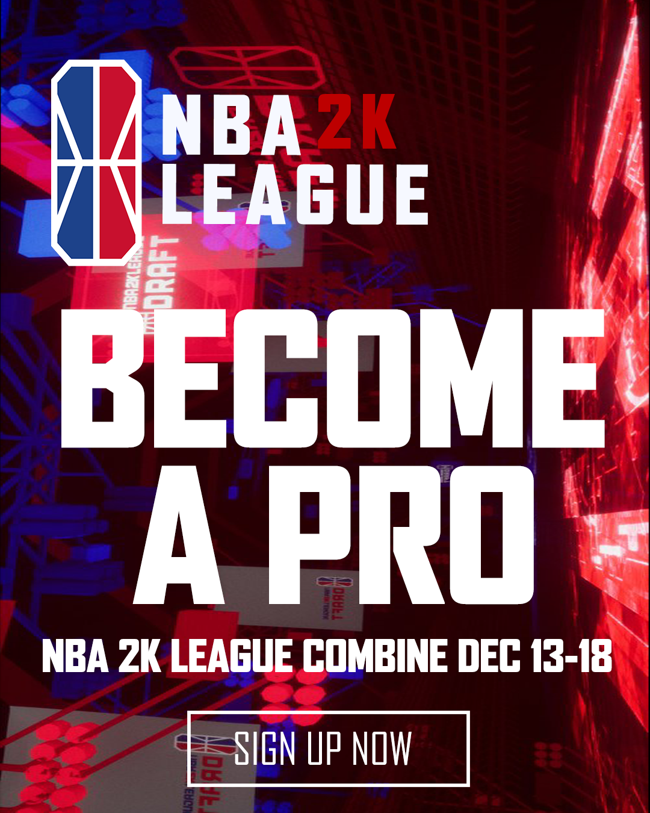
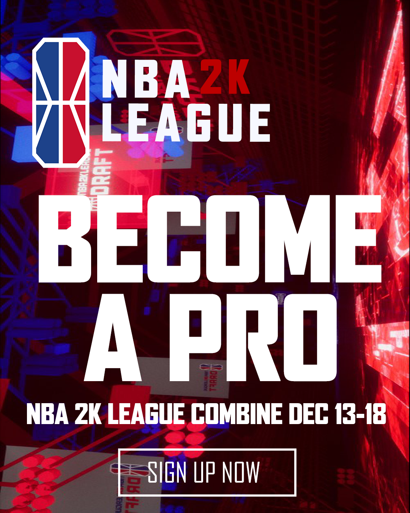
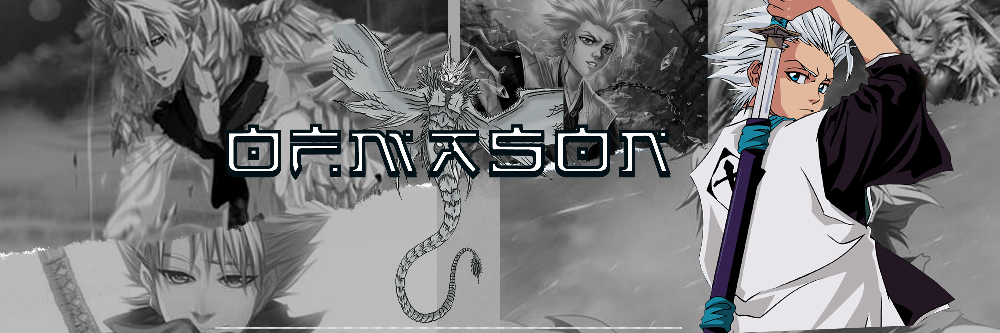
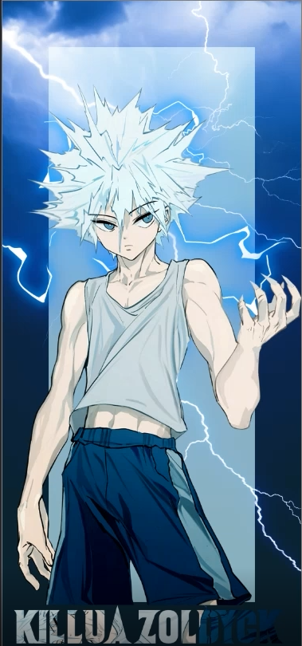
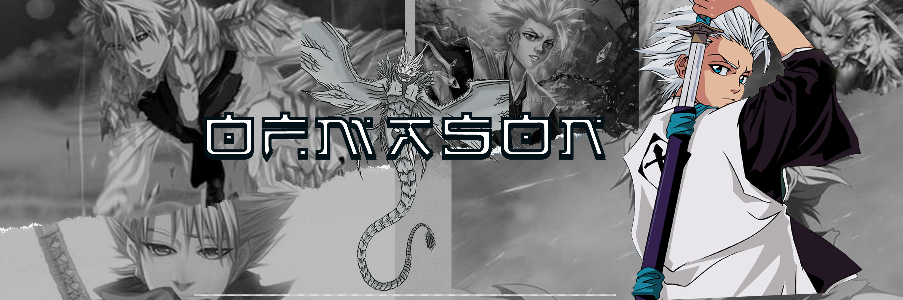
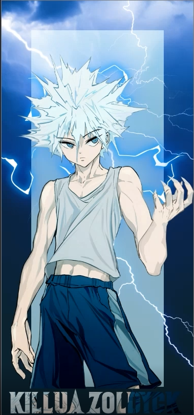

 



Mason Chery
MasonChery4@gmail.com
4076687673
Hello My name is Mason Chery Im a second year student at seminole state Community college. I am Majoring in Digital design hoping to obtain my associates in arts,
then later on obtaining my bachelor's.I am well Experienced with Adobe illustrator, Photoshop and premiere pro i am in fact Photoshop certified and have over 5 years experience
Flight Crew
Defy Orlado-Orlando Florida
November 2020 to March 2021
Rebounderz Ref
Rebounderz Apopka
Arpil 2022 to August 2022
Seminole State Community College
Spring 2021 to Present
Edgewater High School
August 2016 to May 2020